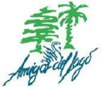

Antes fuimos publicistas y fotógrafos, fuimos escritores también, pero ahora somos activistas por los derechos animales, porque no podemos mantenernos ajenos a la tremenda masacre de la que somos parte como sociedad, pero no por un tema de sensibilidad, por un tema de justicia. Somos todo esto, por la acción, la lucha y la liberación.
Amnistía Internacional.
Ubicación: Capital federal.
Tipo de Actividad: Informativa.
Tipo de organizacion: Jerárquica.
Amnistía Internacional es un movimiento de más de 7 millones de personas comprometidas para defender a aquellos a quienes se les ha negado justicia o libertad.
Cels.
Ubicación: Capital Federal.
Tipo de Actividad: Informativa.
Tipo de organizacion: Jerárquica.
El Centro de Estudios Legales y Sociales es un organismo de derechos humanos argentino creado en 1979, durante la última dictadura militar, que promueve la protección de los derechos y su ejercicio efectivo, la justicia y la inclusión social, a nivel nacional e internacional.
Greenpeace argentina.
Ubicación: Capital federal.
Tipo de Actividad: Informativa-Protestante.
Tipo de organizacion: Jerárquica.
Somos una organización sin fines de lucro, independiente, que no acepta donaciones de gobiernos, empresas o partidos políticos. El trabajo que realizamos es totalmente financiado por más de 3 millones de socios en todo el mundo. Nuestra independencia económica garantiza transparencia y libertad de expresión. Además, permite asumir riesgos y hacer frente a los objetivos comprometiéndonos exclusivamente con los individuos y la sociedad civil.
Asociación Amigos del Lago de Palermo
Ubicación: Capital Federal.
Tipo de Actividad: Informativa.
Tipo de organizacion: Horizontal.

Es una entidad sin fines de lucro cuyo objetivo primario es proteger, defender y mejorar el Parque 3 de Febrero. Entre sus objetivos está el investigar la historia del Parque y todas aquellas situaciones que determinaron el actual estado de degradación del mismo. El comienzo de nuestra actividad se remonta al verano de 1989/90, gestándose a través de un grupo de vecinos que se reunieron espontáneamente y que finalmente el 7 abril de 1990 se constituyeron como Asociación Civil.
Bios Argentina.
Ubicación: Mar del Plata, Buenos Aires.
Tipo de Actividad: Informativa.
Tipo de organizacion: Horizontal.
BIOS es una Asociación Civil sin fines de lucro, creada para la defensa del ambiente hace dos décadas de modo informal, y hace 14 años, institucionalmente.
BIOS trabaja por la construcción de sociedades en las que la economía, la cultura y la política estén al servicio de la dignidad humana, la equidad, el respeto a la diversidad y el medio ambiente, y por una integración basada en la democracia, la inclusión y la justicia social.
Tinta verde.
Ubicación: La Plata, Buenos Aires.
Tipo de Actividad: Informativa.
Tipo de organizacion: Jerárquica.
Somos un colectivo de comunicación socioambiental, surgido en 2008 en la ciudad de La Plata, integrado por estudiantes y graduados/as de periodismo, abogacía y ciencias naturales; además de colaboradores/as de distintas ciudades del país.
Nuestro objetivo es generar y difundir material sobre las problemáticas socioambientales, que no suelen circular en los grandes medios comerciales, y que son de vital importancia para identificar las causas de la crisis socioeconómica y ambiental que atraviesa el mundo, en particular América Latina.
La revuelta.
Ubicación: Neuquén.
Tipo de Actividad: Informativa-Protestante.
Tipo de organizacion: Horizontal.
Somos mujeres, que desde este colectivo, nos convertimos en pasajeras que revisitamos los itinerarios de saberes feministas históricamente construidos. Y También pretendemos imprimir nuestras marcas locales en este movimiento político, cuyos aportes han producido efectos tanto en el ámbito de la ciencia como en la vida cotidiana de las mujeres.
Colectiva de antropologas feministas.
Ubicación: Capital Federal.
Tipo de Actividad: Informativa.
Tipo de organizacion: Horizontal.
La Colectiva de Antropólogas Feministas es una asociación de mujeres que plantean una reflexión antropológica y feminista sobre temas de género y sexualidad tanto desde ámbitos académicos como de espacios de activismo y gestión. Para este fin, las CAF configuran un grupo dinámico y adaptable a la diversidad de interlocutores e interlocutoras con quienes dialogar sobre género en su compleja intersección con variables como estado, etnia, sexualidad y clase.
Activismo Feminista Digital.
Ubicación: La Plata, Buenos Aires.
Tipo de Actividad: Informativa.
Tipo de organizacion: Horizontal.
Somos una organización no gubernamental con sede en La Plata (Provincia de Buenos Aires) y en Ciudad Autónoma de Buenos Aires, Argentina. La Fundación Activismo Feminista Digital plantea el abordaje de diversas temáticas que surgen de la incidencia de las Tecnologías de la Información y la Comunicación en la vida de las mujeres a través del ciberfeminismo
Onda Feminista
Ubicación: Capital Federal.
Tipo de Actividad: Informativa.
Tipo de organizacion: Jerárquica.
Onda Feminista es un medio online que busca impulsar la equidad de género en América Latina.
Creamos un espacio para hablar de la realidad con una perspectiva de género, destacar a las brillantes mujeres y organizaciones que están haciendo un cambio positivo, difundir noticias e información mundial de tinte feminista, y, por supuesto, trabajar por la igualdad de derechos y oportunidades para mujeres y hombres.
Onda Feminista se nutre con las ideas e historias de jóvenes de toda Iberoamérica. Nuestros temas son variados y su manejo también, puedes esperar contenido serio, analítico, educativo, ligero, crítico, y hasta con un toque gracioso.
Federación argentina lgbt
Ubicación: Capital Federal.
Tipo de Actividad: Informativa.
Tipo de organizacion: Jerárquica.
La Federación Argentina LGBT se formó el 28 de junio de 2005, Día Internacional del Orgullo LGBT, como una organización federal, con el compromiso de trabajar para lograr los mismos derechos con los mismos nombres. Nacimos para aunar el esfuerzo desde todas las organizaciones que a lo largo a lo ancho del país conforman la institución para aumentar la capacidad de incidencia social y política del movimiento LGBT.
UVA.
Ubicación: Capital Fedral.
Tipo de Actividad: Informativa.
Tipo de organizacion: Horizontal.
La Unión Vegetariana Argentina, fue fundada el 19 de mayo del año 2000, convirtiéndose de esa forma en la primer ONG en Argentina que se creó para promover y difundir exclusivamente el vegetarianismo vegano, edita la primera revista en Hispanoamérica referida a la temática vegana. La UVA abordó el vegetarianismo vegano desde la defensa de los derechos de los animales, destacando además los beneficios que tiene para el cuidado ambiental, la nutrición y la salud.
La UVA Unión Vegetariana Argentina, desde su fundación hasta la actualidad siempre difundió el vegetarianismo vegano, resaltando y promoviendo el respeto hacia los Animales, hacia el Planeta y hacia las Personas.
Coala.
Ubicación: Capital Federal.
Tipo de Actividad: Informativa.
Tipo de organizacion: Horizontal.
Somos una organización de voluntarios sin ánimo de lucro fundada en la Ciudad de La Plata. nació en Agosto de 2013 y a partir de entonces busca, a través de un activismo constante y comprometido, ponerle fin a la explotación animal.
Nuestra misión es concientizar a las personas sobre la grave problemática de la explotación animal, alentarlas a hacerse veganas, acompañarlas en su transición e inspirarlas a involucrarse a través de activismo vegano no violento y efectivo.
Mama cultiva.
Ubicación: Capital Federal.
Tipo de Actividad: Informativa.
Tipo de organizacion: Jerárquica.
Somos una asociación civil sin fines de lucro conformada por madres, cultivadores y profesionales de diversas áreas, cuyos objetivos son cultivar cannabis medicinal en forma individual y comunitaria, promover politicas publicas que permitan y faciliten su uso y bregar por la libre información sobre el tema y por la accesibilidad sin restricciones económicas para quienes necesitan de esta alternativa.
Cameda.
Ubicación: Capital Federal.
Tipo de Actividad: Informativa.
Tipo de organizacion: Horizontal.
CAMEDA es una ONG que nuclea a pacientes, médicos, investigadores, entre otros, en la búsqueda de una alternativa terapéutica con cannabis medicinal.
Somos una asociación civil cuyo capital social son sus adherentes: pacientes, padres, cannabicultores, profesionales de la salud y del derecho.